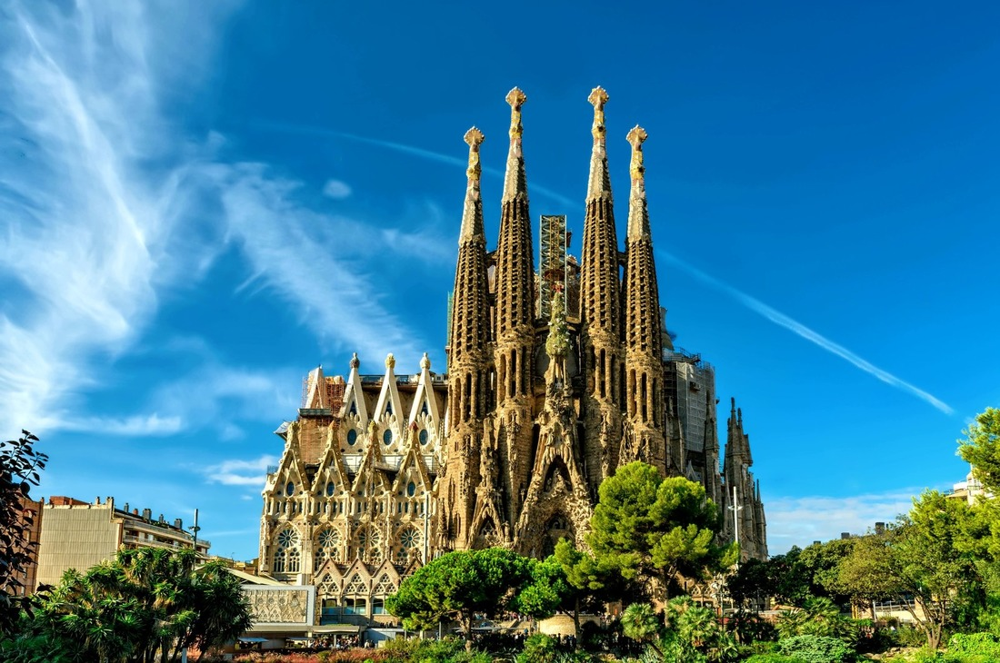
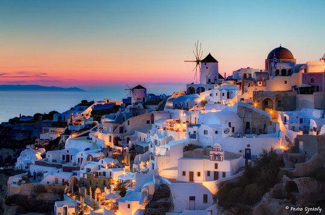
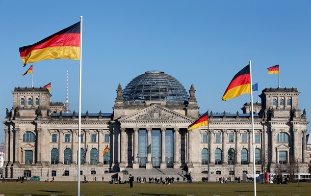
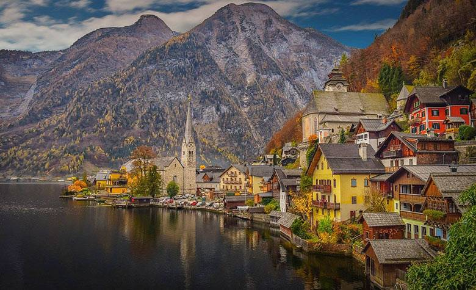
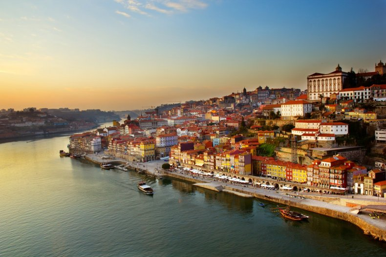
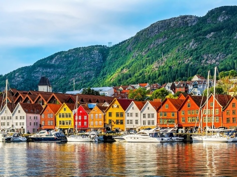
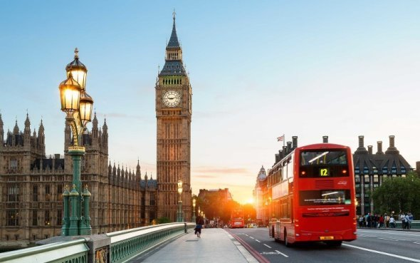

Наші пропозиції

Швейцарія
Швейцарія - це країна, відома своєю неймовірною природою, високими Альпами і численними гірськими озерами. Вона славиться своєю часовою точністю та високоякісними годинниками. Швейцарія також відома своєю банківською системою та нейтралітетом у міжнародних конфліктах

Франція
Франція - країна кохання та елегантності, де можна смакувати найкращі вина та сири, дивитися на Версальський палац, гуляти по багетним вуличкам Парижа та насолоджуватися романтичними видами на Ейфелеву вежу.

Італія
Італія - це смачна кухня, архітектурна краса та безкраї виноходи. Від Рима з його давніми руїнами до Венеції з водними каналами, кожен куток країни сповнений історією.

Іспанія
Іспанія запрошує вас відкрити світ фламенко, тапас та яскравих фестивалів. Барселона зі своєю неймовірною архітектурою Гауді та білими пляжами Коста-дель-Соль - незабутні місця.

Греція
Греція зі своєю багатою історією і чистими егейськими водами цікава для археологів і пляжних любителів. Санторіні та Міконос - відомі острови.

Німеччина
Німеччина славиться своєю точністю, романтичними замками на Рейні та живописними Альпами. Берлін - це культурна столиця з великою історією.

Австрія
Австрія запрошує гірськолижників у Тіроль та музикознавців до Відня, де можна насолодитися відомими операми та симфоніями Моцарта.

Португалія
Португалія вражає природною красою Азорських островів та Сінтри з її палацами. Лісабон і Порту - захоплюючі міста для дослідження.

Норвегія
Норвегія відома своїми захоплюючими фьордами, де можна спостерігати за сяйвами північних вогнів. Основне місто, Осло, багате культурою.

Велика Британія
Велика Британія має суміш історії і сучасності. Лондон з Тауерським мостом та Біг Беном - ікони світової архітектури.